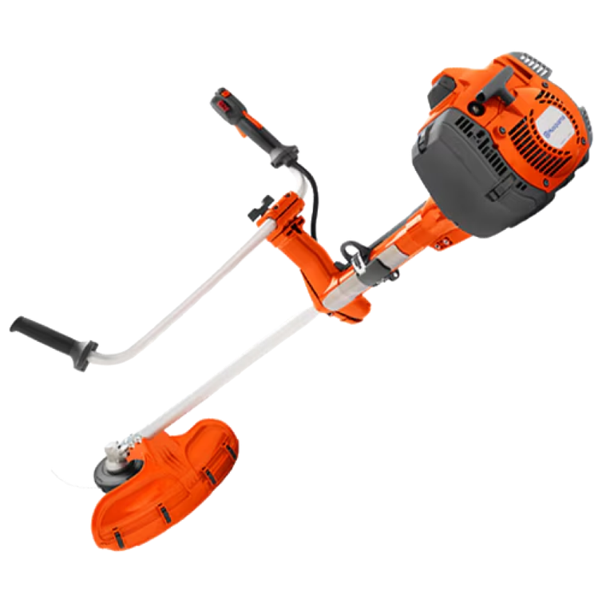

GIRO ZERO
Ideal para grandes áreas verdes, chácaras, condomínios e campos esportivos. Oferece manobrabilidade de 360° e alto rendimento de corte por hora.
- Motor: 22 HP Gasolina
- Largura de Corte: 107 cm
- Diária: R$ 280,00
Ideal para grandes áreas verdes, chácaras, condomínios e campos esportivos. Oferece manobrabilidade de 360° e alto rendimento de corte por hora.

Perfeito para jardins residenciais e áreas médias com acabamento uniforme. Possui recolhedor traseiro e regulagem prática de altura.

Indicada para limpeza de terrenos, mato alto, encostas e acabamentos próximos a muros e árvores onde o carrinho não alcança.